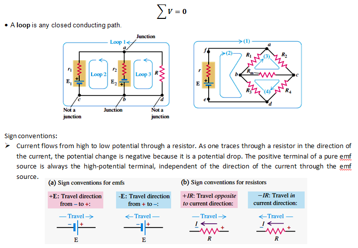

DIRECT CURRENT CIRCUITS
-
Definition
- Any combination or interconnection of electrical devices (i.e. conductors, resistors, sources, capacitors, etc) which form a continuous path for electrical current is called an electrical circuit.
Types of Electrical Circuits
- Direct Current (DC) Circuit - current flows in only one direction all the time.
- Alternating Current (AC) Circuit– current flows in an alternate direction several times per unit time depending on the frequency.
Resistors in Series and Parallel
- Resistor – an electrical component whose primary function is to provide resistance of a certain value (limits the current flow)
Resistors in Series
- Resistors are connected in series when one and only one terminal of a resistor is connected directly to one and only one terminal of another resistor.
Resistors in Parallel
- Several resistors are connected in parallel between two nodes if one end of each resistor is connected to one node and the other end of each is connected to the other node.
-
Sample Problem for Direct Current Circuits
- 1. Determine the Equivalent (Total) Resistance of the following circuits.
- 2. Find the equivalent resistance of the network as well as the voltage and the current in each resistor. Determine the power delivered by the battery and the power dissipated at each resistor.
- 3. The figure shows a multiloop circuit containing one ideal battery of unknown emf and four resistances. Determine the (a) current at R3, (b) total resistance, (c) total current, and (d) the emf of the battery.
KIRCHHOFF’S LAWS
-
Kirchhoff’s Current Rule (KCL) or Junction Rule
- The sum of all the currents coming into a node (i.e., a junction where three or more current-carrying leads attach) must equal to the sum of all the currents leaving that node.
- • A junction in a circuit is a point where three or more conductors meet.
-
Kirchhoff’s Voltage Rule (KVL) or Loop Rule
- As one traces out a closed circuit, the algebraic sum of the potential changes encountered is zero. In this sum, a potential rise is positive and a potential drop is negative.
- 
-
Sample Problem for Kirchhoff’s Law
- 1. In the circuit shown, find the current in each branch.
- 2. Find the current through each of the three resistors of the circuit shown. The emf sources have negligible internal resistance.
- 3. In the circuit shown, both batteries have insignificant internal resistance and the idealized ammeter reads 1.5A in the direction shown. Find the emf, E of the battery.